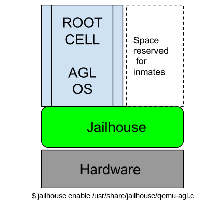
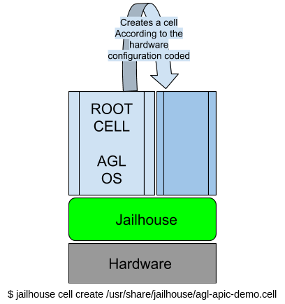
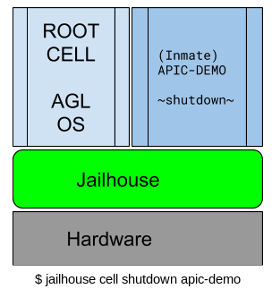
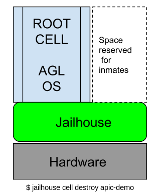

Download the AGL master branch
Run the following commands consecutively in the directory
where you want to build the AGL OS
$ repo init -u https://gerrit.automotivelinux.org/gerrit/AGL/AGL-repo
$ repo sync
You can click here to get a more verbose guide to cloning AGL:
SOURCE CODE
Create the Build Directory
To build the QEMU version of the AGL OS with the Jailhouse hypervisor
Run the following command, it will build a directory where all the work specific to that
build will be stored.
$ source /meta-agl/scripts/aglsetup.sh -m qemux86-64 -b build-dir-name agl-demo agl-devel agl-jailhouse
##this will automotically change the directory to the build-dir-name/
##structure of this direct-tree :)
##.
##├── agl-init-build-env
##├── aglsetup.manifest
##└── conf
#### ├── bblayers.conf
#### ├── fragments.log
#### ├── local.conf
#### ├── setup.log
#### └── templateconf.cfg
The following are features and why they are used:
agl-demo: enable layer meta-agl-demo and meta-qt5 - required to build agl-demo-platform
agl-devel: activate development options (empty root password, debugger, strace, valgrind …)
agl-jailhouse : enable layer meta-agl-jailhouse , required to build the out-of-kernel Jailhouse module
source this script to be able to start bit-baking(or in fancy words, to initialize the build development)
$ source agl-init-build-dev

shows the output given by agl-init-build-dev
Bitbake
NOTE : THIS MAY TAKE ALOT OF TIME(hours) TO BUILD
[ DEPENDING ON HOW POWERFUL YOUR MACHINE IS]
[Even the most powerful machine will take atleast half an hr to get done with the build]
You can manipulate this to some extent by properly assigning the variables
DL_DIR & SSTATE_DIR in conf/local.conf in your build-directory.
bitbake will by default create a tmp/ directory on the first build
where all the work is stored
You can delete this directory if something goes wrong and restart the build
$ bitbake agl-image-minimal
##the above command will build the OS , enough to be able to boot on qemux86-64
##this will build both the jailhouse module and the kernel but,
##you can specifically build the jailhouse module (for changes you make to its layer)
$ bitbake jailhouse
##You can also do the same for the kernel.
##To get kernel source tree, you have to build kernel once
$ bitbake virtual/kernel
To know more about bitbake and what it can do, click here:
BITBAKE
To read more about the way directories are structured and their purpose , click here:
POKY DIRECTORY TREE
##this will start the qemu machine based on the preconfigured QB(qemu-boot) variables
## Use the command--> $ bitbake -e | grep -i ^QB ##to checkout the configuration
$ runqemu slirp kvm nographic
Enter the user login as: root
NOTE: bitbake -e : prints the environment dump that gets parsed even before the build starts
## Externally connect to the qemu machine by executing this command
## on another shell on the same machine
## This will help us view the progress of Jailhouse hypervisor in a more verbose manner
$ nc localhost 4321

add ss of how it should look at every jailhouse step
https://github.com/siemens/jailhouse
https://github.com/siemens/jailhouse-images
$ jailhouse hardware check
$ jailhouse enable /usr/share/jailhouse/cells/qemu-agl.cell

____________________________________________________________________________
$ jailhouse cell create /usr/share/jailhouse/cells/agl-apic-demo.cell
$ jailhouse cell load apic-demo /usr/share/jailhouse/inmate/apic-demo.bin

____________________________________________________________________________
$ jailhouse cell start apic-demo
$ jailhouse cell stats apic-demo

____________________________________________________________________________
$ jailhouse cell shutdown apic-demo
$ jailhouse cell destroy apic-demo

